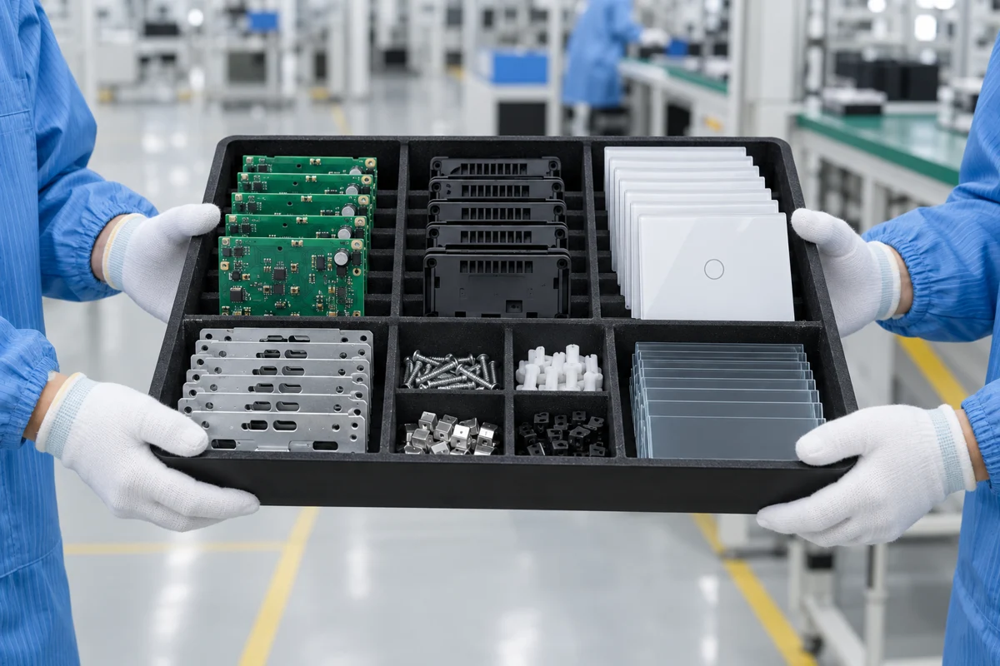

Electronics
PCB and component operations
Electronics, assembly, configuration, testing and packing.

PCB and component operations

Product and housing integration

Settings and firmware
Model-specific function checks
Product, accessories and identification
Follow each stage, its output and the review point.

Match the required components and product version.
Build and inspect the electronic module.

Integrate electronics and structural parts.
Apply settings for the selected model.
Check relevant functions and record results.
Bring product, accessories and packaging together.
Review what is checked, from incoming materials to shipment preparation.
Materials and components
Review key materials, specifications and relevant documents.
Assembly and configuration
Check assembly and configuration during production.
Model-specific verification
Verify relevant functions and product appearance.
Identification and packaging
Review identity, accessories and packing condition.